AnyPortrait > 메뉴얼 > 다양한 경우에서의 리깅
다양한 경우에서의 리깅
1.2.2
리깅 작업은 수많은 테스트와 수정 작업을 통해서 퀄리티를 향상시켜야 하는 작업입니다.
전문가들의 경험과 노하우가 요구되는 작업이기 때문에 다양한 포럼을 통해서 리깅에 대한 정보를 얻을 수 있습니다.
이 페이지는 리깅 작업에 어려움을 겪는 분들을 위해서 몇가지 경우에 대해서 어떻게 리깅을 해야할지를 다룹니다.
또한 각각의 경우에 대해 AnyPortrait의 기능을 어떻게 사용해야하는지 더 상세하게 설명합니다.
관절의 위치에 따른 차이
2개 혹은 그 이상의 본들이 연결된 관절은 리깅에 있어서 가장 중요한 부위입니다.
어떻게 가중치를 설정하느냐에 따라서 메시가 변형되는 모습이 크게 달라지기 때문입니다.
여기서 가중치의 분포만큼 중요한 것이 바로 "관절의 위치"입니다.
이미지의 중심에서 본들이 연결될 지, 아니면 가장자리에서 본들이 연결되어 관절을 구성할 지는 매우 중요한 문제입니다.
이것은 정답이 없으며, 어떤 이미지에 관절을 만드는지에 따라서 여러분들이 직접 비교하여 결정하시면 되겠습니다.
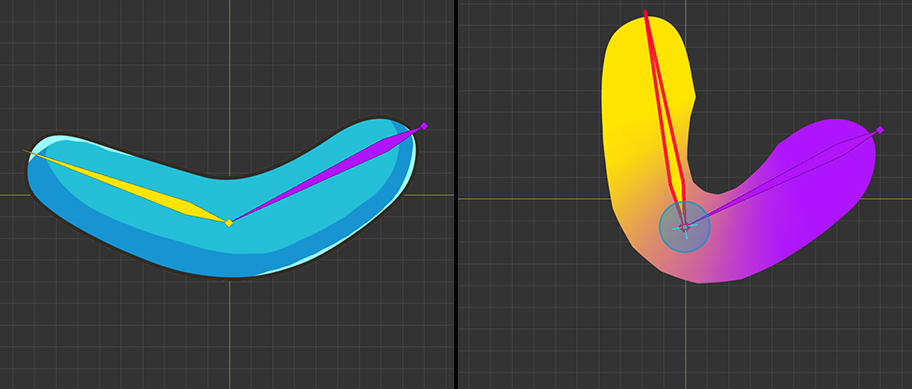
먼저, 관절이 이미지의 중심에 위치한 경우입니다.
이 경우는 관절이 안쪽, 바깥쪽으로 움직이는 경우에 적합합니다.
관절의 안쪽과 바깥쪽이 균일하게 변형됩니다.

두번째 경우는 관절이 이미지의 바깥쪽에 위치하는 경우입니다.
관절의 안쪽이 변형이 꽤 크게 발생하는 반면, 바깥쪽은 비교적 적게 변형됩니다.
겉보기에 이 방식은 변형이 심하지만, 사람과 동물의 많은 관절들 (팔, 무릎, 손가락 등)은 실제로 이러한 방식으로 되어있습니다.
(직접 자신의 손가락과 무릎을 만져서 뼈의 위치를 확인해봅시다.)
이 방식으로 관절을 구성하면 관절이 접힐 때, 살이 안쪽으로 부풀며 접히는 것을 묘사할 수 있습니다.

마지막 경우는 관절이 이미지의 안쪽에 위치한 경우입니다.
관절 안쪽의 변형이 가작 적으며, 바깥쪽의 변형이 커지는 특성이 있습니다.
이미지가 압축되는 부위가 적기 때문에, 이미지의 부피가 줄어드는 것을 방지할 때 유용합니다.
옆모습의 사람의 이미지의 경우엔 골반과 다리의 연결 부위에서 이 방식이 사용될 수도 있습니다.
위의 3가지 경우는 가중치의 분포가 완만하게 설정된 경우입니다.
하지만 사람이나 동물의 이미지에서는 관절의 동작이 복잡하므로 조금 더 수작업으로 설정된 가중치가 요구됩니다.
위의 경우를 수정하여 다음과 같이 리깅을 할 수 있습니다.
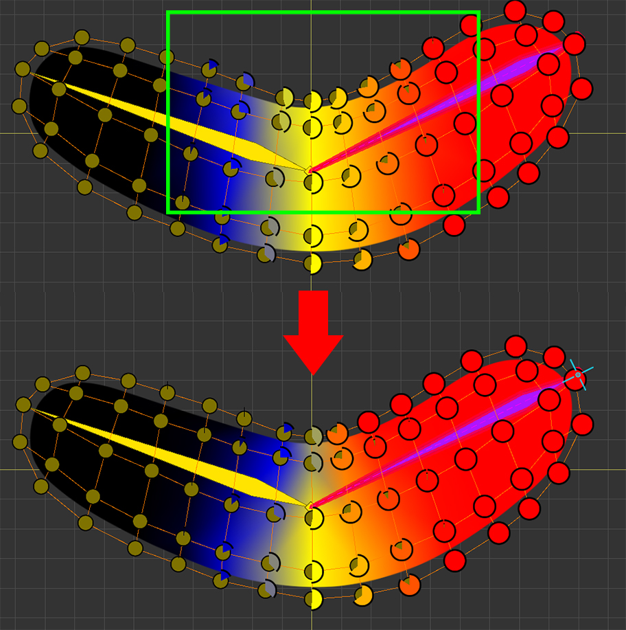
가중치를 위의 이미지와 같이 수정하였습니다.
관절의 안쪽 부위의 가중치가 더욱 급격하게 변하는 것을 볼 수 있습니다.
Blend 기능을 적게 사용하고, 직접 가중치를 증감하여 위와 같이 수정할 수 있습니다.
이렇게 가중치를 수정한 경우 어떻게 결과가 다르게 나타날지 아래의 이미지에서 확인할 수 있습니다.

앞의 설명과 마찬가지로 관절의 위치에 따라 각각 어떻게 적용되는지 비교해봅시다.
1) 관절이 중심에 위치한 경우
: 관절의 안쪽의 이미지가 약간 접히게 나타납니다.
사람이나 동물과 같은 캐릭터의 대부분의 관절에 적용하기 좋습니다.
2) 관절이 바깥쪽에 위치한 경우
: 관절 안쪽이 상당히 많이 변형되면서 이미지가 다소 이상하게 보일 수 있습니다.
사람이나 동물의 관절 중, 관절이 접힐 때, 피부가 부풀어서 접히는 경우(팔, 무릎, 손가락 등) 이 방식이 꽤 효과적입니다.
메시가 이상하게 출력되는 것을 막기 위해서 버텍스의 Z-Depth를 수정할 필요가 있습니다. (관련 페이지)
3) 관절이 안쪽에 위치한 경우
: 가중치 분포 방식이 바뀌어도 결과는 크게 바뀌지 않습니다.
연속된 다수의 본들로 구성된 경우

로프나 목도리, 긴 머리카락과 같이 여러개의 연속된 본들을 대상으로 리깅을 해야하는 경우가 있습니다.
특히, 대상의 움직임이 상당히 유연하여 특정 위치에 관절이 형성되는 것이 아니라면 가중치를 할당하기가 쉽지 않습니다.
이 경우 Blend 기능을 이용하는 것이 꽤 효과적입니다.
다음의 방법대로 리깅을 해봅시다.
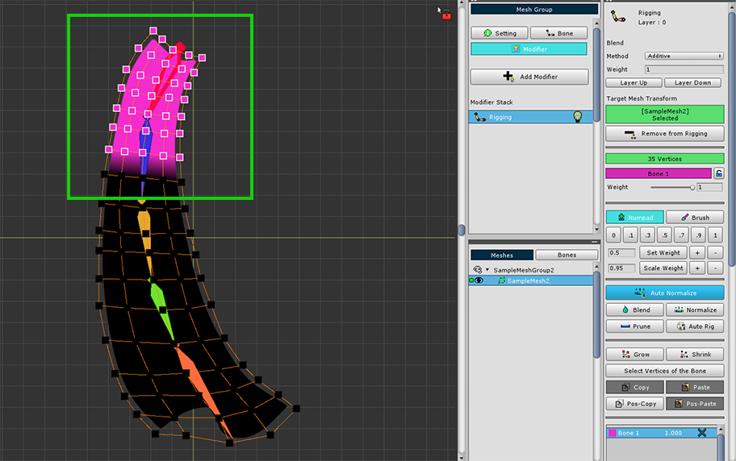
시작이 되는 첫번째 본과 버텍스들을 선택합니다.
버텍스들을 선택할 때, 다음의 본에 위치한 버텍스들까지 충분히 많이 선택해도 됩니다.

이어서 다음 본과 버텍스들을 선택하고 가중치를 설정합니다.
이때, 모든 경우에 가중치 값으로 "1"를 할당합니다.
이 단계부터 일일이 직접 가중치를 복잡하게 할당하는 것은 매우 번거로울 뿐더러, 좋은 결과물을 보기도 어렵습니다.

포즈 테스트 기능을 이용하여 리깅 결과를 확인해봅시다.
당연하게도 가중치 값은 각각의 본에 대해 1만 입력되어 있기 때문에 위와 같이 이상하게 보여질 것입니다.
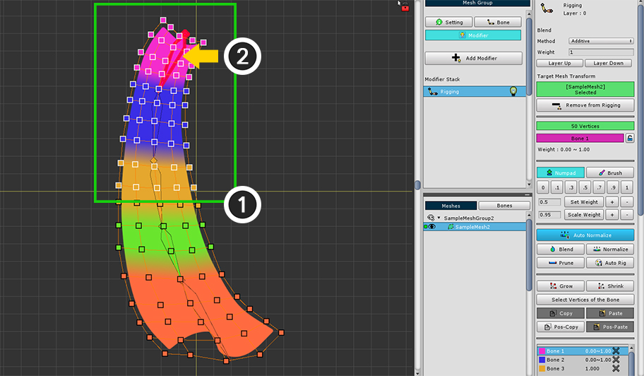
Blend 기능을 사용해봅시다.
첫번째 본부터 순차적으로 리깅을 수정합니다.
(1) 버텍스들을 선택합니다. 이번에는 꽤 넓은 범위의 버텍스들을 선택합니다.
(2) 첫번째 본을 선택합니다.

(3) Blend 버튼을 몇차례 반복하여 누릅니다.
마치 블러 효과를 적용한 것처럼 가중치가 고르게 분포됩니다.

두번째 본에 대해서도 동일하게 작업을 합니다.
(4) 버텍스들을 선택합니다. 이번에도 꽤 넓은 범위의 버텍스들을 선택합니다.
(5) 두번째 본을 선택합니다.
(6) Blend 버튼을 몇차례 누릅니다.
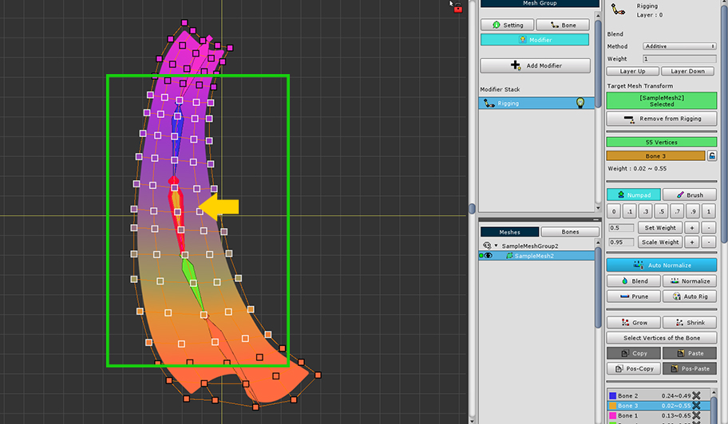


같은 방식으로 마지막 본까지 동일하게 Blend 기능을 실행합니다.
이 작업을 하면 가중치가 꽤 고르게 분포된 것처럼 보입니다.

가중치를 확인해보면, 양쪽 끝에 위치한 본들에 대한 가중치는 꽤 크지만, 중간의 본들에 대한 가중치는 적은 편입니다.
중간의 본들에 대한 가중치가 적게 적용되면 꽤 유연한 형태의 모습을 보여줍니다.
필요에 따라서 가중치를 증감하거나 Blend의 적용 횟수를 조절해봅시다.

다시 포즈 테스트를 켜보면 복잡한 관절의 움직임에 메시가 꽤 자연스럽게 변형되는 것을 볼 수 있습니다.
브러시 모드 이용하기
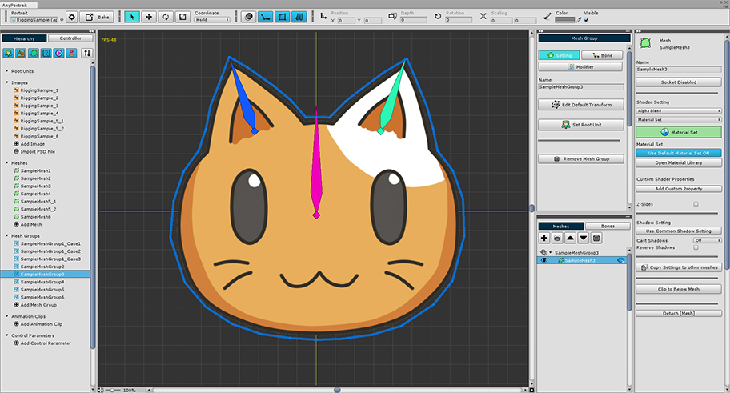
AnyPortrait의 브러시 모드를 이용하면 마우스로 가중치를 설정할 수 있습니다.
이번에는 위와 같이 큰 본과 작은 본 두개로 구성된 예제를 대상으로 설명합니다.
작은 두개의 본에 양쪽 귀를 할당하고자 하는데, 이 경우 브러시 모드로 작업을 하면 꽤 편리합니다.

(1) 모든 버텍스들을 선택합니다.
(2) 기본이 되는 본을 선택합니다.
(3) 가중치를 1로 할당합니다.
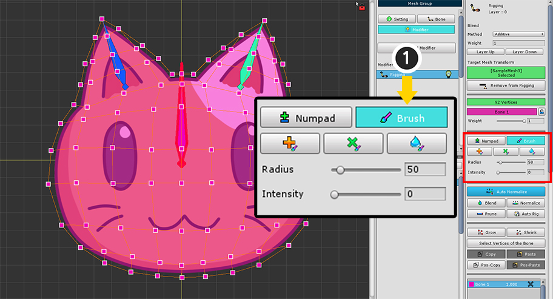
(1) Brush 탭을 선택하면 브러시 툴들이 나타납니다.

브러시 모드의 UI입니다.
1. Numpad 탭, Brush 탭
: 기존의 숫자 패드 스타일의 가중치 툴과 브러시 모드를 전환합니다.
2. "더하기", "곱하기", "블러" 브러시
: 각각 더하기 연산이 되는 브러시, 곱하기 연산이 되는 브러시, 주변과 값을 완만하게 만드는 블러 브러시 툴입니다.
각각의 단축키는 J , K , L 입니다.
브러시 모드를 종료하려면 마우스 우클릭 을 하면 됩니다.
3. Radius
: 브러시의 반경입니다. 단축키 [ , ] 로 크기를 증감할 수 있습니다.
4. Intensity
: 브러시의 강도입니다. 단축키 < , > 로 강도를 증감할 수 있습니다.

(1) 왼쪽의 본을 선택합니다. (버텍스가 선택된 상태여야 합니다.)
(2) "더하기" 브러시를 선택합니다. (단축키 J )
(3) 마우스 주변에 원형의 브러시가 나타납니다.
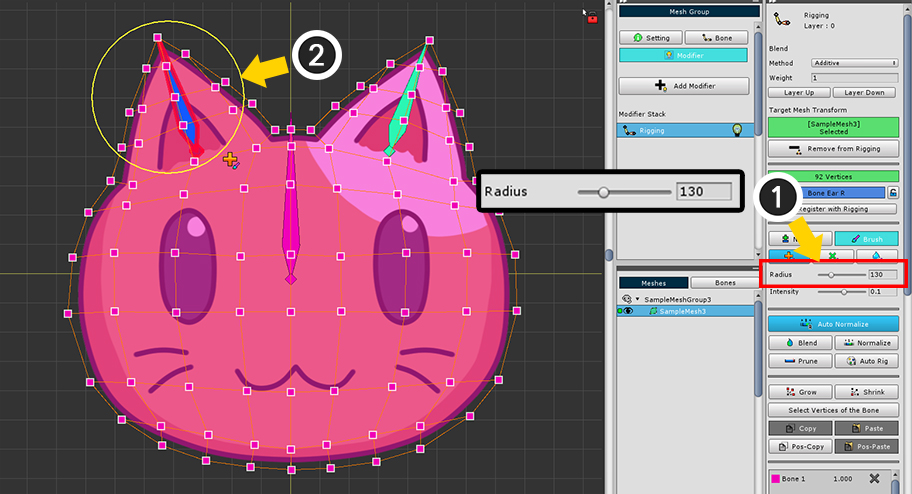
(1) Radius의 값을 증가시킵니다. (단축키 ] )
(2) 브러시의 크기가 커진 것을 볼 수 있습니다.

(3) 마우스를 클릭한 상태로 문지르면 선택된 본에 대한 가중치가 서서히 증가하는 것을 볼 수 있습니다.
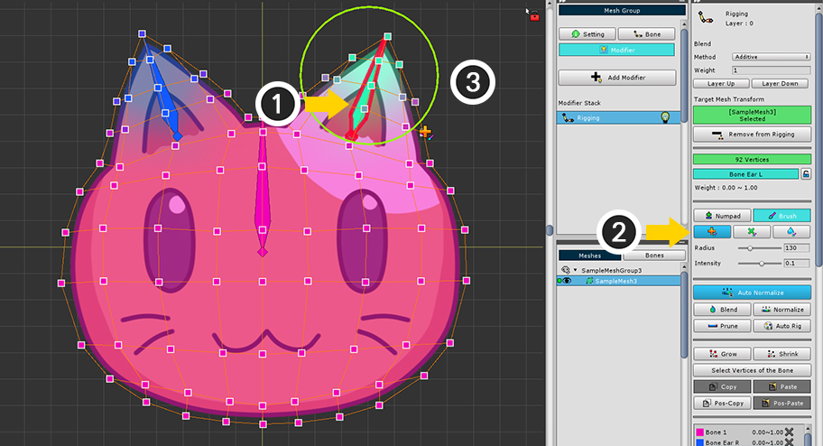
반대쪽 본에 대해서도 동일한 작업을 해봅시다.
(1) 마우스 우클릭을 하여 브러시 모드를 해제하고 버텍스가 선택된 상태에서 오른쪽의 작은 본을 선택합니다.
(2) "더하기" 브러시를 선택합니다.
(3) 마우스를 클릭하여 문질러주면 반대쪽 귀에 대해서도 가중치가 증가합니다.

"곱하기" 브러시를 이용하면 가중치의 값을 세밀하게 편집하는 것이 가능합니다.
(1) 본과 버텍스들이 선택된 상태에서 "곱하기" 브러시를 선택합니다.
(2) 브러시로 버텍스들을 문지르면 가중치가 비율에 의해 서서히 증감하는 것을 볼 수 있습니다.
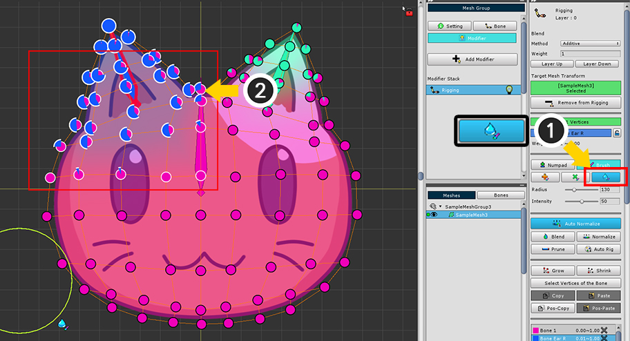
"블러" 브러시를 이용하면 가중치의 값이 완만하게 분포하도록 만들 수 있습니다.
Blend의 기능과 유사합니다.
(1) 본과 버텍스들이 선택된 상태에서 "블러" 브러시를 선택합니다.
(2) 브러시로 버텍스들을 문지르면 가중치가 주변의 버텍스들과 비교하여 서서히 유사하게 변합니다.
결과적으로 가중치가 완만하게 분포되는 것을 볼 수 있습니다.

포즈 테스트를 통해서 리깅 결과를 확인해봅시다.
브러시 툴을 이용해서 간편하게 리깅 작업을 할 수 있습니다.
잠금 기능을 이용하여 가중치가 변하는 것을 방지하기
본들이 3개 이상 연결된 부위에서는 리깅 작업이 매우 복잡해집니다.
특히 어떤 본에 대해서 먼저 리깅을 하느냐에 따라서 결과가 달라질 수 있는 것이 가장 힘든 점입니다.
가중치 값이 나중에 선택된 본의 영향을 많이 받기 때문에, 먼저 작업한 결과가 왜곡되기 쉽습니다.
v1.1.8에서 추가된 잠금 기능을 이용하면 이러한 문제를 조금이나마 방지할 수 있습니다.
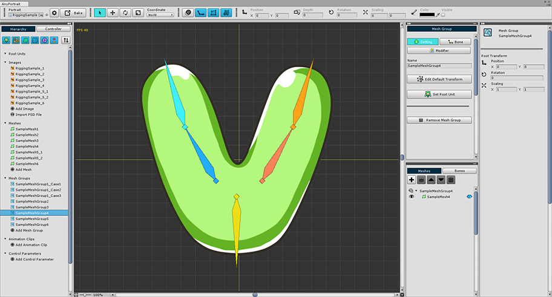
이번 예제의 형태는 세갈래로 나뉘어진 본들과 V자 형태의 이미지입니다.
이미지의 중앙에는 3개의 본들에 대해서 리깅이 되어야 하므로 다소 복잡해질 수 있습니다.

간단하게 리깅을 해보았습니다.
예상대로 가운데의 버텍스들의 가중치는 3개의 본에 의해 복잡하게 할당된 것을 볼 수 있습니다.

아래의 본인 "Bone Root"의 가중치 분포입니다.
아래 부분을 기준으로 좌우로 균일하게 분포된 상태입니다.
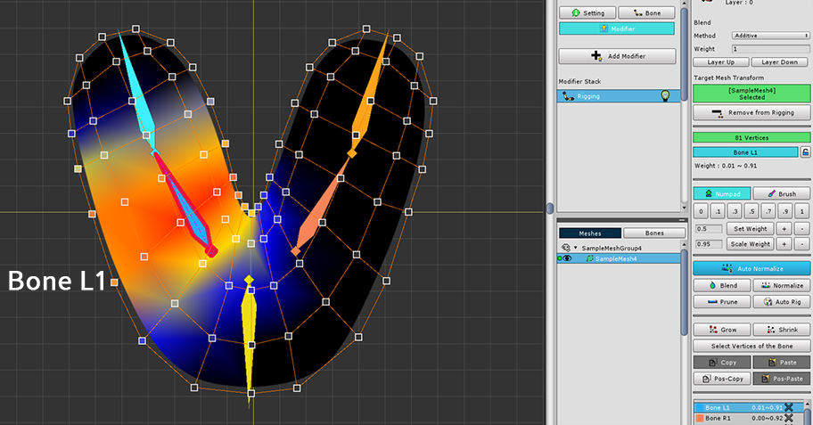

좌우의 본들에 대한 가중치도 서로 비슷하게 분포되었습니다.
이제 여기서 오른쪽 본인 "Bone R1"의 가중치를 증가시켜봅시다.
단, 아래의 본인 "Bone Root"의 가중치는 그대로 유지시켜봅시다.

(1) 리깅 가중치 값을 잠글 본을 선택합니다.
(2) 리깅 잠금 버튼을 누릅니다.
(3) 선택된 본은 모든 버텍스에 대해서 가중치 편집이 제한되며, 본 리깅 정보 리스트의 아이콘으로도 그 상태를 확인할 수 있습니다.
잠금 기능은 다음과 같은 특징이 있습니다.
1) 본 편집 모드가 종료되면 모든 잠금 기능은 해제됩니다.
2) 잠금 기능은 "다른 본"에 의해서 잠겨진 본의 가중치가 변하는 것을 방지하는 기능입니다.
3) 잠금 상태라 할지라도, 2)의 이유로 해당 본을 선택한 상태에서는 가중치가 편집이 됩니다.
4) Blend나 Normalize에 의해서 아주 약간의 값의 변화는 있을 수 있지만 그 변화는 크지 않습니다.

잠금 기능을 테스트해봅시다.
(1) 오른쪽 본과 꽤 넓은 범위의 버텍스들을 선택합니다.
(2) "+" 버튼을 눌러서 가중치를 임의로 증가시켰습니다.


왼쪽의 본에 대한 가중치는 많이 줄어든 반면,
잠금 기능이 켜진 아래의 본에 대한 가중치는 그대로 유지되는 것을 볼 수 있습니다.
겹쳐진 메시에 리깅 가중치를 복사해야 하는 경우
여러개의 메시가 중첩된 경우 가중치 값을 복사하는 기능은 매우 요긴합니다.
가중치 값을 복사하면 중복된 리깅 작업을 방지하고, 겹쳐있는 메시들의 동기화된 움직임이 어색해지는 것을 방지할 수 있습니다.
기존의 가중치 복사 기능은 1개의 버텍스의 가중치 값을 다른 1개의 버텍스로 복사하여 붙여넣는 것만 지원합니다.
하지만 v1.1.8에 추가된 위치 기반 복사하기(Pos-Copy/Paste)를 이용하면 다수의 버텍스의 리깅 정보를 다른 다수의 버텍스로 일괄적으로 복사하는 것이 가능합니다.

이 예제에는 두개의 메시가 겹쳐져 있습니다.
(1)의 메시에 (2)의 메시가 옷이나 갑옷처럼 장착된 상태입니다.

일단 안쪽의 메시에 대해 리깅 작업을 수행합니다.
버텍스가 많고, 가중치가 완만하게 분포되어 있기 때문에 이 가중치들을 다른 메시에 동일하게 다시 설정하는 것은 매우 힘든 작업일 것입니다.

이 버텍스들에 대한 가중치 값을 복사해봅시다.
(1) 가능한 많은 버텍스들을 선택합니다. 여기서는 모든 버텍스를 선택했습니다.
(2) Pos-Copy 버튼을 누릅니다.
위치 기반 복사 기능은 저장된 버텍스들의 위치를 기반으로 대상의 리깅 가중치를 다시 보간하여 붙여넣는 방식입니다.
따라서 많은 수의 버텍스를 저장할 수록 더 정확하게 가중치를 붙여넣을 수 있습니다.
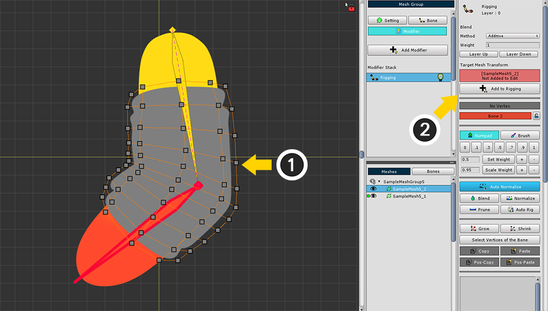
이제 잠시 안보이게 만들었던 위쪽의 메시를 보이게 만듭니다.
(1) 메시를 선택합니다.
(2) Add to Rigging 버튼을 눌러서 리깅 모디파이어에 추가합니다.

(1) 모든 버텍스들을 선택합니다.
(2) Pos-Paste 버튼을 눌러서 저장된 리깅 가중치를 붙여넣습니다.
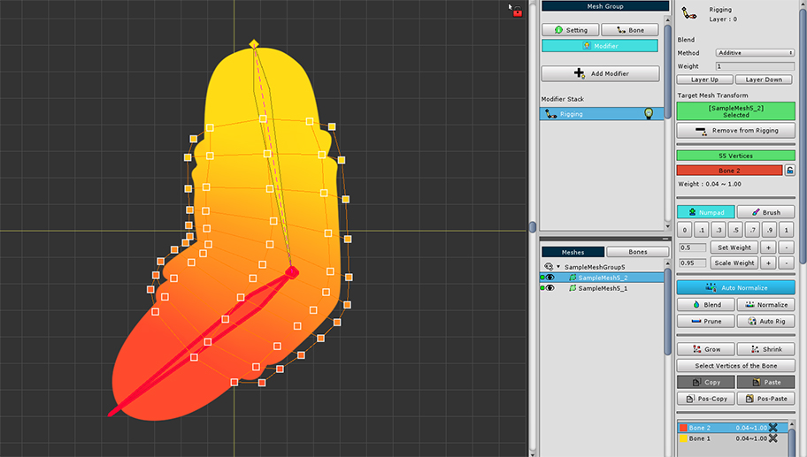
리깅 가중치가 모든 버텍스에 복사되었습니다.
기존의 메시와 거의 동일하게 가중치가 분포된 것을 볼 수 있습니다.

포즈 테스트 기능으로 본을 움직여보면 두개의 메시가 동기화되어 움직이는 것을 볼 수 있습니다.
Auto Rig 기능 이용하기
Auto Rig 기능을 이용하면 선택된 버텍스에 자동으로 리깅 가중치를 설정하는 것이 가능합니다.
이 기능은 v1.1.8에서 대폭 개선되었으며, 상당히 편리하고 강력한 기능으로 개발되었습니다.
Auto Rig 기능은 다음과 같은 특징이 있습니다.
- 관절로 연결된 본들 간의 가중치는 완만하게 분포되는 반면, 서로 직접적으로 연결되지 않은 본들 간에는 다소 급격하게 가중치가 분포되도록 설정됩니다.
- 선택된 버텍스에 대해서만 Auto Rig 기능이 수행됩니다.
- 본의 가중치가 적용되는 범위는 버텍스의 분포에 따라서 자동으로 결정되며, 선택되지 않은 버텍스들도 연산에 참고됩니다.
- 선택된 버텍스에 이미 리깅 가중치가 있는 경우, 본의 가중치 적용 범위가 바뀌며, 더욱 정확하게 연산할 수 있습니다.
다음의 예시를 통해서 Auto Rig 기능을 사용하는 방법을 확인해봅시다.

위와 같은 예제에서 Auto Rig 기능을 이용하여 간편하게 리깅을 해봅시다.

(1) 버텍스를 선택합니다. 여기서는 모든 버텍스를 대상으로 적용해보겠습니다.

(1) Auto Rig 버튼을 누릅니다.
(2) 선택된 버텍스에 가중치가 자동으로 할당됩니다.

포즈 테스트 기능을 이용하여 리깅이 잘 되었는지 확인해봅시다.
본들이 복잡하게 구성되었어도 대체로 리깅이 잘 되었습니다.
하지만 일부의 버텍스의 리깅이 이상하게 설정된 것이 보입니다.
Auto Rig의 특성을 활용한다면 위와 같은 에러를 더욱 줄여서 추가적인 리깅 작업을 줄이고 전체 작업의 효율을 더 높일 수 있습니다.
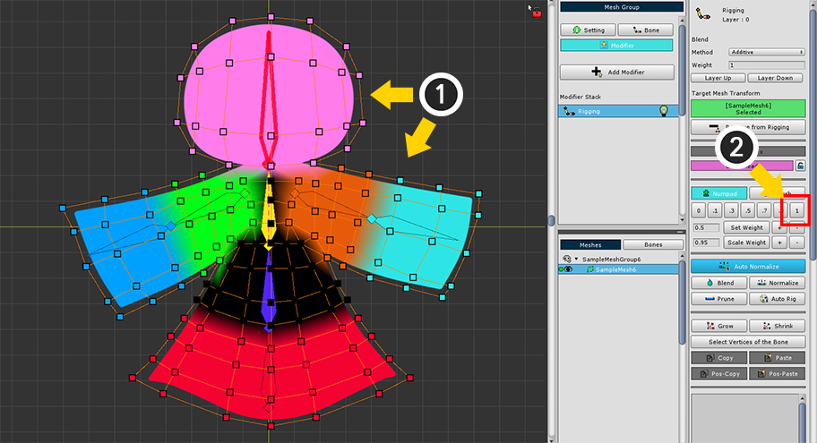
Auto Rig 기능을 사용하기 전으로 돌아온 후 다시 리깅을 시작해봅시다.
위에 설명된 Auto Rig의 특성 중 다음의 항목을 이용할 것입니다.
"- 선택된 버텍스에 이미 리깅 가중치가 있는 경우, 본의 가중치 적용 범위가 바뀌며, 더욱 정확하게 연산할 수 있습니다."
이 특성을 이용하면 Auto Rig의 결과가 더 정확하게 만들어집니다.
(1) 주요 부위의 버텍스들과 "가장 가까운 본"을 선택합니다.
(2) 가중치를 "1"로 할당합니다.
이 작업을 모든 본에 대해서 수행할 필요가 없으며, 에러가 발생할 만한 버텍스들과 본에 대해서만 하면 됩니다.
이러한 가이드 작업은 정밀하게 수행하지 않아도 됩니다.

다시 Auto Rig 버튼을 눌러봅시다.
위와 유사하게 자동으로 리깅이 된 것을 볼 수 있습니다.
실제로 향상된 결과가 만들어졌는지 확인해봅시다.

포즈 테스트 기능을 이용하여 본을 움직여서 리깅 결과를 확인해봅시다.
이전보다 리깅이 자연스럽고 크게 어색한 부분이 없어진 것을 보실 수 있습니다.
Auto Rig 기능은 리깅 작업의 효율을 높이는 용도로 사용되며,
이후에 추가적인 보정 작업을 통해서 리깅의 품질을 더욱 향상시키는 것을 권장합니다.
본을 직접 선택하여 Auto Rig 기능 이용하기
Auto Rig 기능은 모든 본을 대상으로 리깅을 연산합니다.
따라서 간혹 불필요한 본이 버텍스와 연결되는 경우가 발생합니다.
Auto Rig 기능이 적용될 본들을 직접 선택하여 이러한 문제를 막고 더욱 정확하고 빠르게 리깅을 할 수 있습니다.

Rigging 모디파이어가 적용된 메시의 버텍스들을 선택한 상태입니다.
(1) Ctrl (Mac OS에서는 Command )을 누른 상태에서 Auto Rig 버튼을 누릅니다.
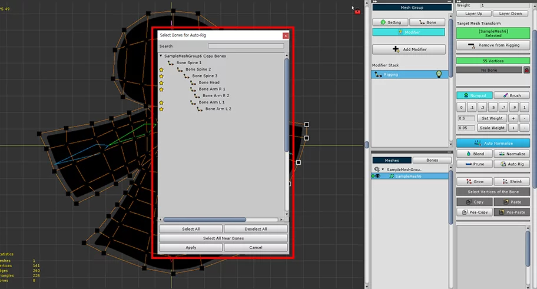
본을 선택할 수 있는 다이얼로그가 나타납니다.
1. Search : 이름을 검색하여 본을 찾습니다.
2. 본 리스트 : 리깅의 대상이 되는 본을 선택할 수 있습니다. Shift 키를 눌러서 여러개의 본을 선택할 수 있습니다.
3. 별 모양 아이콘 : 선택된 버텍스들과 가까이 있는 본들입니다.
4. Select All / Deselect All 버튼 : 모든 본들을 선택하거나 선택을 해제합니다.
5. Select All Near Bones 버튼 : 선택된 버텍스들과 가까이 있는 본들(별모양 아이콘이 있는 본들)을 선택합니다.
6. Apply 버튼 : 선택된 본을 대상으로 Auto Rig 기능을 수행합니다.
7. Cancel 버튼 : 작업을 취소합니다.

Auto Rig를 하기 위해서 본을 선택하고 적용해봅시다.
(1) Select All Near Bones 버튼을 누릅니다.
별 모양 아이콘이 있는 본들이 선택됩니다.
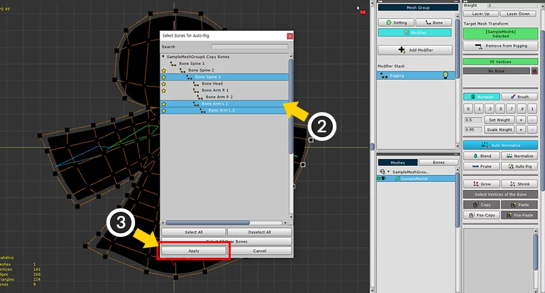
(2) Shift 를 누른 상태로 클릭하여 추가하거나 제외할 본을 선택합니다.
(3) Apply 버튼을 누릅니다.

선택된 본들을 대상으로 Auto Rig 기능이 적용되었습니다.

본을 선택하지 않고 Auto Rig를 실행한 결과와 다르게 리깅이 된 것을 볼 수 있습니다.
참고
본을 선택하고 Auto Rig 기능을 실행하면 다음의 특징에 따라서 리깅이 계산됩니다.
- 선택된 본은 Auto Rig의 대상이 될 뿐이므로, 모든 버텍스에 선택된 모든 본들의 가중치가 항상 추가되는 것은 아닙니다.
- 만약 해당 버텍스에 선택되지 않은 다른 본이 리깅이 된 상태라면, 그 본을 포함하여 Auto Rig 기능이 실행됩니다.